2 Pre procesamiento
2.1 Importación
rm(list=ls())
load(url("https://github.com/AlvaroLimber/EST-383/raw/master/data/oct20.RData"))2.2 Exploración
- Filas/observaciones: Mesas electorales
- Hay información a nivel de mesas según el tipo de elección.
- La cobertura espacial: No solo es Bolivia
2.2.1 Diccionario de variables
dim(computo)## [1] 68132 26nrow(computo)## [1] 68132ncol(computo)## [1] 26names(computo)## [1] "País" "Número departamento"
## [3] "Departamento" "Provincia"
## [5] "Número municipio" "Municipio"
## [7] "Circunscripción" "Localidad"
## [9] "Recinto" "Número Mesa"
## [11] "Código Mesa" "Elección"
## [13] "Inscritos" "CC"
## [15] "FPV" "MTS"
## [17] "UCS" "MAS - IPSP"
## [19] "21F" "PDC"
## [21] "MNR" "PAN-BOL"
## [23] "Votos Válidos" "Blancos"
## [25] "Nulos" "Estado acta"str(computo)## tibble [68,132 × 26] (S3: tbl_df/tbl/data.frame)
## $ País : chr [1:68132] "Argentina" "Argentina" "Argentina" "Argentina" ...
## $ Número departamento: num [1:68132] 10 10 10 10 10 10 10 10 10 10 ...
## $ Departamento : chr [1:68132] "Buenos Aires" "Buenos Aires" "Buenos Aires" "Buenos Aires" ...
## $ Provincia : chr [1:68132] "Quilmes" "Quilmes" "Quilmes" "Quilmes" ...
## $ Número municipio : num [1:68132] 1 1 1 1 1 1 1 1 1 1 ...
## $ Municipio : chr [1:68132] "Quilmes" "Quilmes" "Quilmes" "Quilmes" ...
## $ Circunscripción : chr [1:68132] NA NA NA NA ...
## $ Localidad : chr [1:68132] "Ezpeleta" "Ezpeleta" "Ezpeleta" "Ezpeleta" ...
## $ Recinto : chr [1:68132] "Esc Primaria Nro 52 Gral. Bartolome Mitre." "Esc Primaria Nro 52 Gral. Bartolome Mitre." "Esc Primaria Nro 52 Gral. Bartolome Mitre." "Esc Primaria Nro 52 Gral. Bartolome Mitre." ...
## $ Número Mesa : num [1:68132] 1455 1456 1457 1458 1459 ...
## $ Código Mesa : chr [1:68132] "110111041392518605" "110111041392518606" "110111041392518607" "110111041392518608" ...
## $ Elección : chr [1:68132] "Presidente y Vicepresidente" "Presidente y Vicepresidente" "Presidente y Vicepresidente" "Presidente y Vicepresidente" ...
## $ Inscritos : num [1:68132] 237 237 235 239 238 239 238 237 63 239 ...
## $ CC : num [1:68132] 2 6 5 8 7 8 7 1 5 3 ...
## $ FPV : num [1:68132] 0 1 0 1 1 0 2 0 0 0 ...
## $ MTS : num [1:68132] 0 1 0 1 0 0 0 0 1 0 ...
## $ UCS : num [1:68132] 0 0 1 1 0 0 1 0 0 2 ...
## $ MAS - IPSP : num [1:68132] 118 110 120 124 122 122 121 106 33 114 ...
## $ 21F : num [1:68132] 0 0 2 0 0 0 1 1 0 3 ...
## $ PDC : num [1:68132] 3 5 3 2 6 2 4 3 0 6 ...
## $ MNR : num [1:68132] 1 1 0 0 0 0 1 0 0 0 ...
## $ PAN-BOL : num [1:68132] 2 1 0 2 0 1 1 0 1 1 ...
## $ Votos Válidos : num [1:68132] 126 125 131 139 136 133 138 111 40 129 ...
## $ Blancos : num [1:68132] 1 1 1 2 1 0 1 1 0 4 ...
## $ Nulos : num [1:68132] 1 6 5 2 2 5 4 9 0 1 ...
## $ Estado acta : chr [1:68132] "Computada" "Computada" "Computada" "Computada" ...str(computo$País)## chr [1:68132] "Argentina" "Argentina" "Argentina" ...typeof(computo$País)## [1] "character"2.2.2 Agregación/Niveles
aux<-unique(computo$Elección)
length(unique(computo$`Código Mesa`))## [1] 34551library(dplyr)
#filtrado ctr+alt*M
bdpv<-computo %>% filter(Elección==aux[1])
bddu<-computo %>% filter(Elección==aux[2])
bdde<-computo %>% filter(Elección==aux[3])
save(bdpv,bddu,bdde,file="bd_elecciones20.RData")2.2.3 Descripción univariada
- Tablas de frecuencia (cualitativas)
- Reportes estadísticos; media, sd, etc. (Cuantitativas)
- Gráficos (mix)
# Ejercicio: Crear un vector que haga la diferencia entre variables cualitativas y cuantitativas.
dcuanti<-function(bd){
bd<-data.frame(bd)
aux<-NULL
for(i in 1:ncol(bd)){
aux[i]<-is.numeric(bd[,i])
}
return(aux)
}
dcuanti(bdpv)## [1] FALSE TRUE FALSE FALSE TRUE FALSE FALSE FALSE FALSE
## [10] TRUE FALSE FALSE TRUE TRUE TRUE TRUE TRUE TRUE
## [19] TRUE TRUE TRUE TRUE TRUE TRUE TRUE FALSE#typeof(bdpv)
#str(bdpv)
#bdpv<-data.frame(bdpv)
#is.numeric(bdpv[,"MNR"])
#is.numeric(bdpv[,21])
#is.numeric(bdpv$MNR)
vcuanti<-names(bdpv)[dcuanti(bdpv)]
vcuali<-names(bdpv)[!dcuanti(bdpv)]
library(Hmisc)
describe(bdpv[,vcuanti])## bdpv[, vcuanti]
##
## 16 Variables 34551 Observations
## -----------------------------------------------------------
## Número departamento
## n missing distinct Info Mean Gmd
## 34551 0 86 0.96 5.033 3.798
## .05 .10 .25 .50 .75 .90
## 1 2 2 4 7 7
## .95
## 9
##
## lowest : 1 2 3 4 5, highest: 92 93 94 95 96
## -----------------------------------------------------------
## Número municipio
## n missing distinct Info Mean Gmd
## 34551 0 8 0.698 1.888 1.352
##
## lowest : 1 2 3 4 5, highest: 4 5 6 7 8
##
## Value 1 2 3 4 5 6 7 8
## Frequency 23108 3274 2259 1391 4024 384 73 38
## Proportion 0.669 0.095 0.065 0.040 0.116 0.011 0.002 0.001
## -----------------------------------------------------------
## Número Mesa
## n missing distinct Info Mean Gmd
## 34551 0 34551 1 44067 27264
## .05 .10 .25 .50 .75 .90
## 10222 20121 25304 34953 71670 76853
## .95
## 78580
##
## lowest : 1001 1002 1003 1004 1005
## highest: 90385 90386 90387 90388 90389
## -----------------------------------------------------------
## Inscritos
## n missing distinct Info Mean Gmd
## 34551 0 253 0.999 211.7 33.36
## .05 .10 .25 .50 .75 .90
## 89 160 220 226 231 235
## .95
## 238
##
## lowest : 5 6 7 9 10, highest: 254 255 256 257 258
## -----------------------------------------------------------
## CC
## n missing distinct Info Mean Gmd
## 34551 0 185 1 64.86 51.77
## .05 .10 .25 .50 .75 .90
## 3 7 25 61 100 131
## .95
## 144
##
## lowest : 0 1 2 3 4, highest: 180 181 185 189 193
## -----------------------------------------------------------
## FPV
## n missing distinct Info Mean Gmd
## 34551 0 14 0.801 0.6866 0.9302
## .05 .10 .25 .50 .75 .90
## 0 0 0 0 1 2
## .95
## 3
##
## lowest : 0 1 2 3 4, highest: 9 10 11 12 16
##
## Value 0 1 2 3 4 5 6 7
## Frequency 19338 9814 3563 1170 409 109 65 30
## Proportion 0.560 0.284 0.103 0.034 0.012 0.003 0.002 0.001
##
## Value 8 9 10 11 12 16
## Frequency 20 16 8 3 5 1
## Proportion 0.001 0.000 0.000 0.000 0.000 0.000
## -----------------------------------------------------------
## MTS
## n missing distinct Info Mean Gmd
## 34551 0 52 0.923 2.223 3.106
## .05 .10 .25 .50 .75 .90
## 0 0 0 1 3 6
## .95
## 9
##
## lowest : 0 1 2 3 4, highest: 48 50 54 55 58
## -----------------------------------------------------------
## UCS
## n missing distinct Info Mean Gmd
## 34551 0 16 0.825 0.7316 0.948
## .05 .10 .25 .50 .75 .90
## 0 0 0 0 1 2
## .95
## 3
##
## lowest : 0 1 2 3 4, highest: 13 17 105 132 136
##
## Value 0 1 2 3 4 5 6 7
## Frequency 18100 10674 3982 1243 355 121 40 19
## Proportion 0.524 0.309 0.115 0.036 0.010 0.004 0.001 0.001
##
## Value 8 9 10 13 17 105 132 136
## Frequency 4 4 3 2 1 1 1 1
## Proportion 0.000 0.000 0.000 0.000 0.000 0.000 0.000 0.000
## -----------------------------------------------------------
## MAS - IPSP
## n missing distinct Info Mean Gmd
## 34551 0 232 1 83.62 49.34
## .05 .10 .25 .50 .75 .90
## 20 28 49 81 115 141
## .95
## 158
##
## lowest : 0 1 2 3 4, highest: 227 229 232 233 253
## -----------------------------------------------------------
## 21F
## n missing distinct Info Mean Gmd
## 34551 0 92 0.992 7.531 8.923
## .05 .10 .25 .50 .75 .90
## 0 0 2 4 10 20
## .95
## 27
##
## lowest : 0 1 2 3 4, highest: 92 97 98 110 125
## -----------------------------------------------------------
## PDC
## n missing distinct Info Mean Gmd
## 34551 0 72 0.999 15.6 11.47
## .05 .10 .25 .50 .75 .90
## 2 4 8 14 22 30
## .95
## 35
##
## lowest : 0 1 2 3 4, highest: 70 71 75 87 92
## -----------------------------------------------------------
## MNR
## n missing distinct Info Mean Gmd
## 34551 0 40 0.869 1.225 1.717
## .05 .10 .25 .50 .75 .90
## 0 0 0 1 2 3
## .95
## 5
##
## lowest : 0 1 2 3 4, highest: 36 38 39 46 62
## -----------------------------------------------------------
## PAN-BOL
## n missing distinct Info Mean Gmd
## 34551 0 19 0.901 1.153 1.388
## .05 .10 .25 .50 .75 .90
## 0 0 0 1 2 3
## .95
## 4
##
## lowest : 0 1 2 3 4, highest: 14 15 16 17 29
##
## 0 (14321, 0.414), 1 (9904, 0.287), 2 (5331, 0.154), 3
## (2683, 0.078), 4 (1292, 0.037), 5 (565, 0.016), 6 (235,
## 0.007), 7 (119, 0.003), 8 (41, 0.001), 9 (26, 0.001), 10
## (17, 0.000), 11 (5, 0.000), 12 (2, 0.000), 13 (3, 0.000),
## 14 (2, 0.000), 15 (1, 0.000), 16 (1, 0.000), 17 (2,
## 0.000), 29 (1, 0.000)
## -----------------------------------------------------------
## Votos Válidos
## n missing distinct Info Mean Gmd
## 34551 0 239 1 177.6 37.73
## .05 .10 .25 .50 .75 .90
## 72 119 176 192 201 207
## .95
## 212
##
## lowest : 0 3 4 5 6, highest: 239 240 245 246 255
## -----------------------------------------------------------
## Blancos
## n missing distinct Info Mean Gmd
## 34551 0 72 0.969 2.705 3.023
## .05 .10 .25 .50 .75 .90
## 0 0 1 2 4 6
## .95
## 8
##
## lowest : 0 1 2 3 4, highest: 89 90 96 105 110
## -----------------------------------------------------------
## Nulos
## n missing distinct Info Mean Gmd
## 34551 0 56 0.993 6.637 4.587
## .05 .10 .25 .50 .75 .90
## 1 2 4 6 9 12
## .95
## 14
##
## lowest : 0 1 2 3 4, highest: 56 63 64 67 92
## -----------------------------------------------------------describe(bdpv[,vcuali])## bdpv[, vcuali]
##
## 10 Variables 34551 Observations
## -----------------------------------------------------------
## País
## n missing distinct
## 34551 0 34
##
## lowest : Alemania Argentina Austria Belgica Bolivia
## highest: Rusia Suecia Suiza Uruguay Venezuela
## -----------------------------------------------------------
## Departamento
## n missing distinct
## 34551 0 84
##
## lowest : Acre Andalucia Antofagasta Arica Atacama
## highest: Texas Tucumán Valencia Viena Virginia
## -----------------------------------------------------------
## Provincia
## n missing distinct
## 34551 0 215
##
## lowest : Abaroa Abel Iturralde Abuna Adolfo Alsina Alonso de Ibáñez
## highest: Washington D.C. Yacuma Yamparaez Yaví Zudañez
## -----------------------------------------------------------
## Municipio
## n missing distinct
## 34551 0 441
##
## lowest : Acasio Achacachi Achocalla Aiquile Alalay
## highest: Yocalla Yotala Yunchará Yunguyo del Litoral Zudañez
## -----------------------------------------------------------
## Localidad
## n missing distinct
## 34551 0 3336
##
## lowest : 1 de Mayo 10 de Noviembre (Núcleo 47) 11 de Septiembre 12 de Agosto 12 de Octubre
## highest: Zapatera Zapatera Norte Zapaterambia Zapoco Zudañez
## -----------------------------------------------------------
## Recinto
## n missing distinct
## 34551 0 4812
##
## lowest : (Cárcel) C.O.F. Miraflores (Cárcel) C.O.F. Obrajes (Cárcel) Cárcel De Mujeres (Cárcel) Cárcel Mocobi (Cárcel) Cárcel Pública
## highest: Urkupiña Urubo Open Mall Veterinaria Sub Sede UATF Virgen De Guadalupe Wakefield High School
## -----------------------------------------------------------
## Código Mesa
## n missing distinct
## 34551 0 34551
##
## lowest : 100320112000000101 100320112000000102 100320112000000103 100320112000000104 100320112000000105
## highest: 112137738202612004 112137738202612005 112137738202612006 112334937922511701 112375037932511801
## -----------------------------------------------------------
## Elección
## n missing
## 34551 0
## distinct value
## 1 Presidente y Vicepresidente
##
## Value Presidente y Vicepresidente
## Frequency 34551
## Proportion 1
## -----------------------------------------------------------
## Estado acta
## n missing distinct value
## 34551 0 1 Computada
##
## Value Computada
## Frequency 34551
## Proportion 1
## -----------------------------------------------------------
##
## Variables with all observations missing:
##
## [1] Circunscripción#Tarea: Escribir una función que permita explorar las características de las variables, según su naturaleza
#cualitativa
t1<-table(bdpv$Departamento)
aux1<-as.data.frame(prop.table(t1)*100)#%
aux2<-as.data.frame(t1)#frecuencias
names(aux1)[2]<-"Porcentaje"
tt1<-merge(aux1,aux2)#unir base de datos
head(tt1)## Var1 Porcentaje Freq
## 1 Acre 0.002894272 1
## 2 Andalucia 0.063673989 22
## 3 Antofagasta 0.196810512 68
## 4 Arica 0.040519811 14
## 5 Atacama 0.017365633 6
## 6 Beijing 0.002894272 1library(dplyr)#Gramática de datos
bdpv %>% group_by(Departamento) %>% count() ## # A tibble: 84 × 2
## # Groups: Departamento [84]
## Departamento n
## <chr> <int>
## 1 Acre 1
## 2 Andalucia 22
## 3 Antofagasta 68
## 4 Arica 14
## 5 Atacama 6
## 6 Beijing 1
## 7 Beni 1298
## 8 Berlín 2
## 9 Bruselas 1
## 10 Buenos Aires 532
## # … with 74 more rows
## # ℹ Use `print(n = ...)` to see more rowstt1<-bdpv %>% group_by(Departamento) %>% summarise(Freq=n()) %>% mutate(Porcentaje=(Freq/sum(Freq))*100)
library(ggplot2)# gramàtica de gràficos
ggplot(bdpv,aes(Departamento))+geom_bar()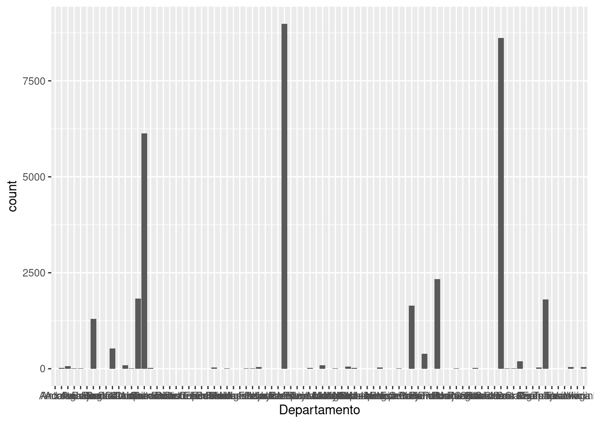
tt1## # A tibble: 84 × 3
## Departamento Freq Porcentaje
## <chr> <int> <dbl>
## 1 Acre 1 0.00289
## 2 Andalucia 22 0.0637
## 3 Antofagasta 68 0.197
## 4 Arica 14 0.0405
## 5 Atacama 6 0.0174
## 6 Beijing 1 0.00289
## 7 Beni 1298 3.76
## 8 Berlín 2 0.00579
## 9 Bruselas 1 0.00289
## 10 Buenos Aires 532 1.54
## # … with 74 more rows
## # ℹ Use `print(n = ...)` to see more rowsggplot(tt1[1:10,],aes(Departamento,Porcentaje))+geom_bar(stat="identity")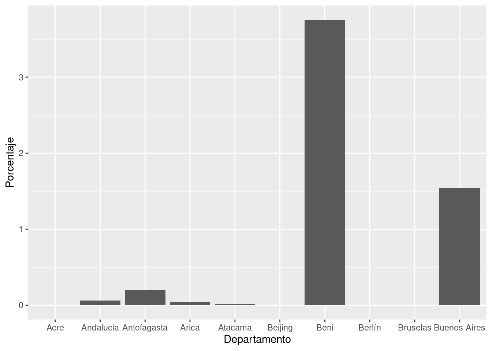
ggplot(tt1 %>% filter(Porcentaje>1),aes(Departamento,Porcentaje))+geom_bar(stat="identity")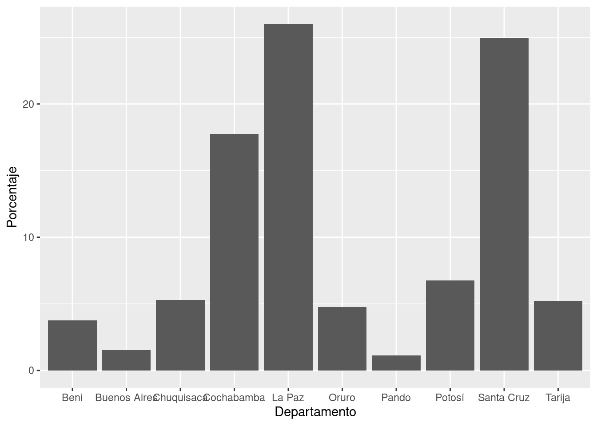
#cuantitativas
mean(bdpv$Blancos)## [1] 2.705479median(bdpv$Blancos)## [1] 2summary(bdpv$Blancos)## Min. 1st Qu. Median Mean 3rd Qu. Max.
## 0.000 1.000 2.000 2.705 4.000 110.000sd(bdpv$Blancos)## [1] 3.839097sd(bdpv$Blancos)/mean(bdpv$Blancos)## [1] 1.419008quantile(bdpv$Blancos,seq(0,1,0.1))## 0% 10% 20% 30% 40% 50% 60% 70% 80% 90% 100%
## 0 0 0 1 1 2 2 3 4 6 110quantile(bdpv$Blancos,seq(0,1,0.05))## 0% 5% 10% 15% 20% 25% 30% 35% 40% 45% 50%
## 0 0 0 0 0 1 1 1 1 2 2
## 55% 60% 65% 70% 75% 80% 85% 90% 95% 100%
## 2 2 3 3 4 4 5 6 8 110hist(bdpv$Blancos)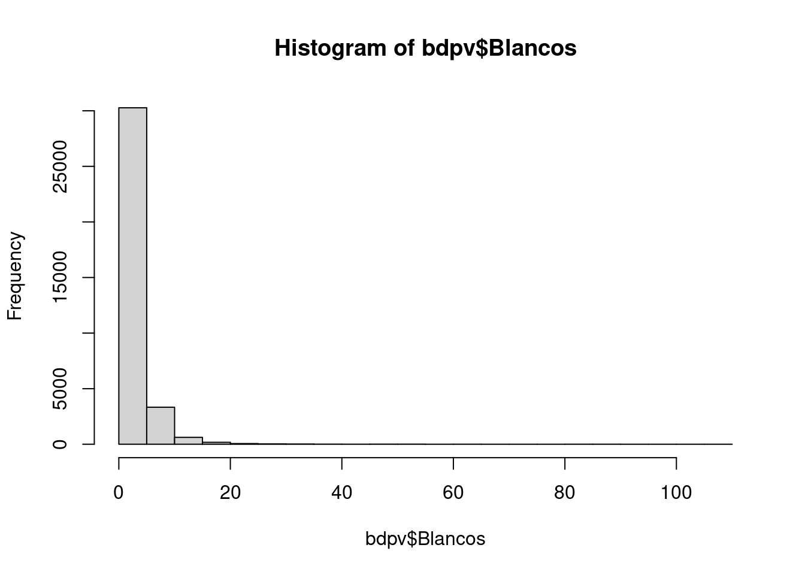
plot(density(bdpv$Blancos))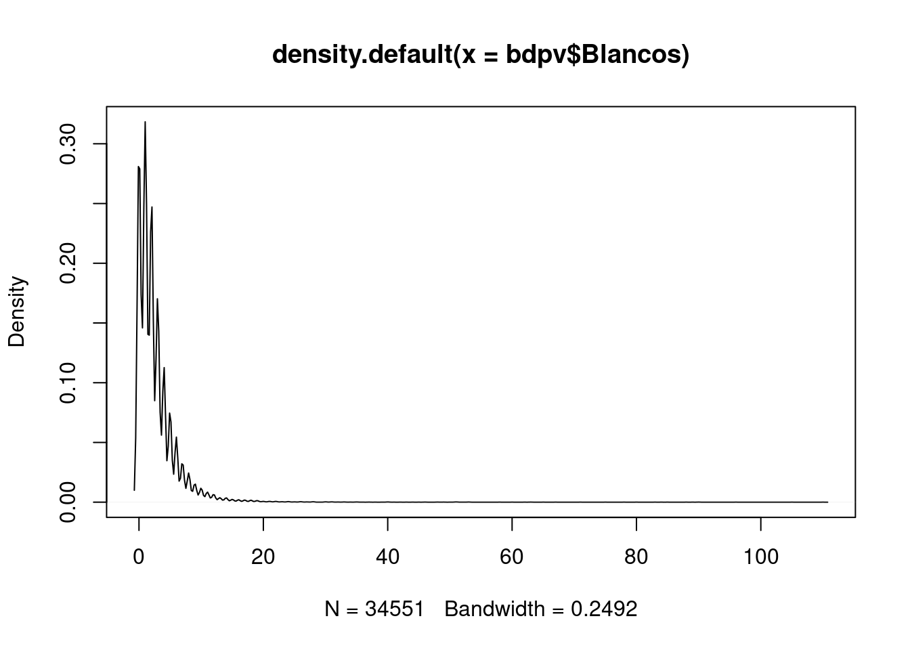
boxplot(bdpv$Blancos)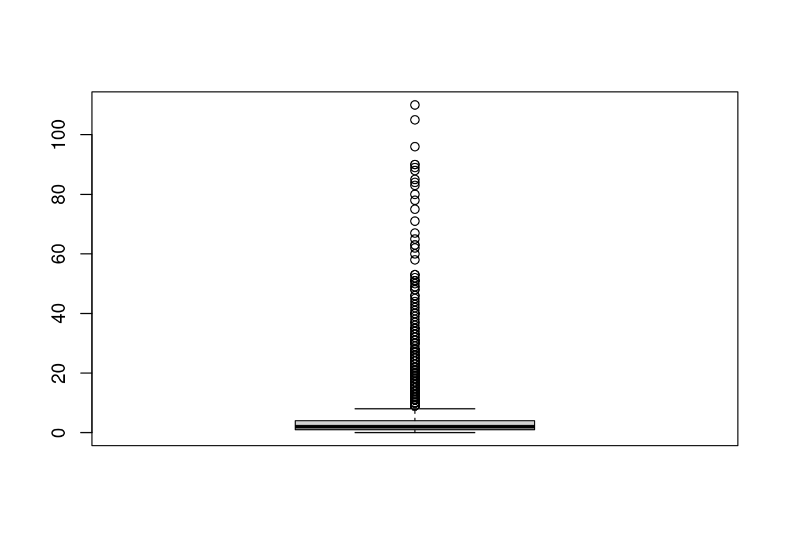
boxplot(log(bdpv$Blancos))## Warning in bplt(at[i], wid = width[i], stats = z$stats[,
## i], out = z$out[z$group == : Outlier (-Inf) in boxplot 1 is
## not drawn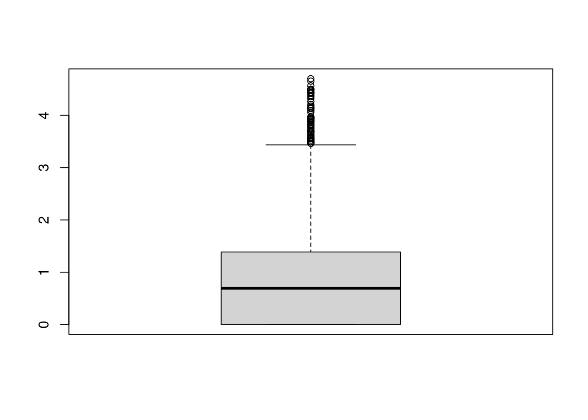
plot(density(log(bdpv$Blancos)))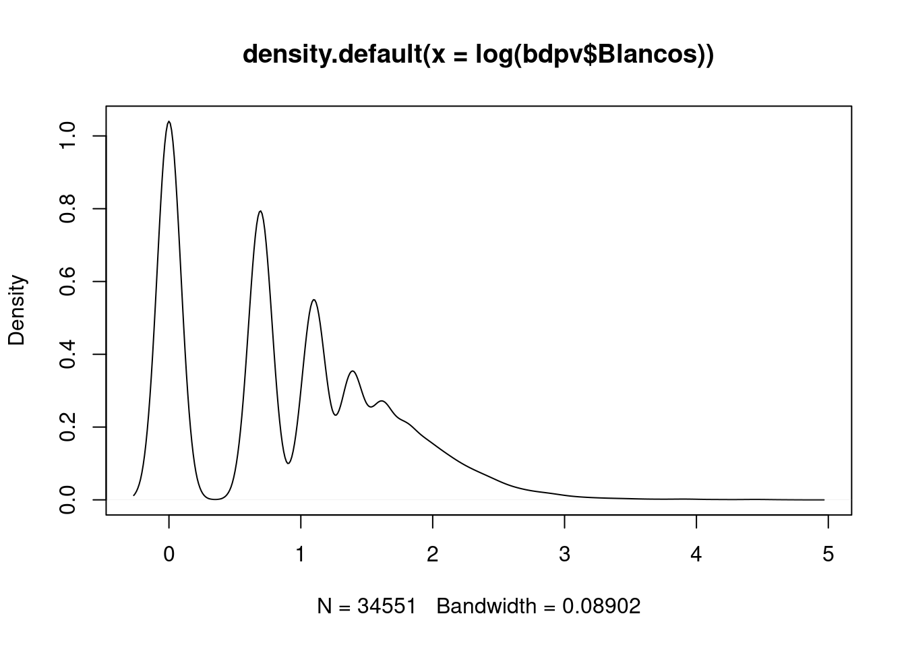
2.3 Relaciones entre 2 variables
- Cuali vs cuali
- Cuanti vs cuanti
- Cuali vs cuanti
rm(list=ls())
load(url("https://github.com/AlvaroLimber/EST-384/raw/master/data/eh19.RData"))
#cuali vs cuali
eh19p$s02a_02#sexo## [1] 1.Hombre 2.Mujer 1.Hombre 2.Mujer 1.Hombre
## [6] 2.Mujer 1.Hombre 2.Mujer 2.Mujer 2.Mujer
## [11] 1.Hombre 2.Mujer 2.Mujer 2.Mujer 1.Hombre
## [16] 2.Mujer 1.Hombre 1.Hombre 1.Hombre 2.Mujer
## [21] 2.Mujer 1.Hombre 2.Mujer 2.Mujer 1.Hombre
## [26] 2.Mujer 2.Mujer 1.Hombre 1.Hombre 2.Mujer
## [31] 1.Hombre 1.Hombre 2.Mujer 1.Hombre 2.Mujer
## [36] 1.Hombre 2.Mujer 1.Hombre 1.Hombre 1.Hombre
## [41] 2.Mujer 1.Hombre 2.Mujer 1.Hombre 1.Hombre
## [46] 1.Hombre 2.Mujer 2.Mujer 1.Hombre 1.Hombre
## [51] 2.Mujer 2.Mujer 1.Hombre 2.Mujer 2.Mujer
## [56] 1.Hombre 2.Mujer 1.Hombre 1.Hombre 1.Hombre
## [61] 2.Mujer 2.Mujer 2.Mujer 2.Mujer 2.Mujer
## [66] 2.Mujer 2.Mujer 1.Hombre 1.Hombre 2.Mujer
## [71] 1.Hombre 1.Hombre 2.Mujer 1.Hombre 1.Hombre
## [76] 2.Mujer 1.Hombre 2.Mujer 1.Hombre 1.Hombre
## [81] 1.Hombre 1.Hombre 1.Hombre 2.Mujer 2.Mujer
## [86] 2.Mujer 1.Hombre 1.Hombre 2.Mujer 1.Hombre
## [91] 2.Mujer 1.Hombre 1.Hombre 2.Mujer 1.Hombre
## [96] 1.Hombre 2.Mujer 1.Hombre 2.Mujer 1.Hombre
## [101] 2.Mujer 2.Mujer 2.Mujer 1.Hombre 1.Hombre
## [106] 2.Mujer 1.Hombre 2.Mujer 1.Hombre 2.Mujer
## [111] 2.Mujer 2.Mujer 1.Hombre 1.Hombre 2.Mujer
## [116] 2.Mujer 2.Mujer 2.Mujer 2.Mujer 1.Hombre
## [121] 2.Mujer 1.Hombre 2.Mujer 2.Mujer 2.Mujer
## [126] 1.Hombre 2.Mujer 1.Hombre 1.Hombre 2.Mujer
## [131] 1.Hombre 2.Mujer 2.Mujer 2.Mujer 2.Mujer
## [136] 1.Hombre 2.Mujer 1.Hombre 2.Mujer 1.Hombre
## [141] 1.Hombre 2.Mujer 1.Hombre 1.Hombre 2.Mujer
## [146] 1.Hombre 2.Mujer 2.Mujer 2.Mujer 1.Hombre
## [151] 1.Hombre 1.Hombre 1.Hombre 1.Hombre 1.Hombre
## [156] 2.Mujer 2.Mujer 1.Hombre 2.Mujer 1.Hombre
## [161] 2.Mujer 1.Hombre 2.Mujer 2.Mujer 2.Mujer
## [166] 1.Hombre 2.Mujer 1.Hombre 2.Mujer 1.Hombre
## [171] 1.Hombre 1.Hombre 1.Hombre 2.Mujer 2.Mujer
## [176] 2.Mujer 2.Mujer 2.Mujer 1.Hombre 1.Hombre
## [181] 2.Mujer 1.Hombre 2.Mujer 2.Mujer 1.Hombre
## [186] 2.Mujer 2.Mujer 1.Hombre 1.Hombre 2.Mujer
## [191] 1.Hombre 1.Hombre 1.Hombre 1.Hombre 1.Hombre
## [196] 1.Hombre 2.Mujer 1.Hombre 1.Hombre 2.Mujer
## [201] 1.Hombre 2.Mujer 1.Hombre 1.Hombre 1.Hombre
## [206] 2.Mujer 1.Hombre 1.Hombre 1.Hombre 1.Hombre
## [211] 2.Mujer 2.Mujer 1.Hombre 2.Mujer 2.Mujer
## [216] 1.Hombre 1.Hombre 2.Mujer 1.Hombre 1.Hombre
## [221] 2.Mujer 1.Hombre 1.Hombre 2.Mujer 2.Mujer
## [226] 2.Mujer 1.Hombre 1.Hombre 2.Mujer 1.Hombre
## [231] 1.Hombre 1.Hombre 2.Mujer 1.Hombre 1.Hombre
## [236] 2.Mujer 1.Hombre 2.Mujer 1.Hombre 2.Mujer
## [241] 1.Hombre 2.Mujer 2.Mujer 2.Mujer 1.Hombre
## [246] 2.Mujer 1.Hombre 1.Hombre 2.Mujer 1.Hombre
## [251] 2.Mujer 1.Hombre 1.Hombre 2.Mujer 1.Hombre
## [256] 2.Mujer 2.Mujer 2.Mujer 1.Hombre 1.Hombre
## [261] 2.Mujer 1.Hombre 1.Hombre 2.Mujer 1.Hombre
## [266] 1.Hombre 2.Mujer 1.Hombre 2.Mujer 1.Hombre
## [271] 1.Hombre 2.Mujer 1.Hombre 2.Mujer 2.Mujer
## [276] 1.Hombre 2.Mujer 2.Mujer 1.Hombre 1.Hombre
## [281] 1.Hombre 2.Mujer 1.Hombre 2.Mujer 2.Mujer
## [286] 1.Hombre 2.Mujer 1.Hombre 2.Mujer 1.Hombre
## [291] 1.Hombre 1.Hombre 2.Mujer 1.Hombre 2.Mujer
## [296] 1.Hombre 1.Hombre 2.Mujer 2.Mujer 2.Mujer
## [301] 1.Hombre 1.Hombre 1.Hombre 2.Mujer 2.Mujer
## [306] 2.Mujer 2.Mujer 1.Hombre 2.Mujer 2.Mujer
## [311] 2.Mujer 2.Mujer 1.Hombre 2.Mujer 1.Hombre
## [316] 2.Mujer 2.Mujer 1.Hombre 1.Hombre 2.Mujer
## [321] 2.Mujer 2.Mujer 1.Hombre 2.Mujer 2.Mujer
## [326] 2.Mujer 2.Mujer 2.Mujer 2.Mujer 1.Hombre
## [331] 2.Mujer 1.Hombre 2.Mujer 2.Mujer 1.Hombre
## [336] 1.Hombre 2.Mujer 1.Hombre 1.Hombre 2.Mujer
## [341] 2.Mujer 2.Mujer 1.Hombre 2.Mujer 2.Mujer
## [346] 2.Mujer 1.Hombre 2.Mujer 2.Mujer 2.Mujer
## [351] 1.Hombre 2.Mujer 2.Mujer 1.Hombre 1.Hombre
## [356] 2.Mujer 2.Mujer 1.Hombre 1.Hombre 2.Mujer
## [361] 1.Hombre 2.Mujer 2.Mujer 1.Hombre 2.Mujer
## [366] 2.Mujer 2.Mujer 1.Hombre 2.Mujer 2.Mujer
## [371] 1.Hombre 2.Mujer 2.Mujer 1.Hombre 1.Hombre
## [376] 1.Hombre 2.Mujer 2.Mujer 1.Hombre 1.Hombre
## [381] 1.Hombre 1.Hombre 2.Mujer 2.Mujer 1.Hombre
## [386] 1.Hombre 2.Mujer 2.Mujer 1.Hombre 1.Hombre
## [391] 2.Mujer 1.Hombre 1.Hombre 2.Mujer 1.Hombre
## [396] 1.Hombre 1.Hombre 2.Mujer 1.Hombre 2.Mujer
## [401] 2.Mujer 2.Mujer 2.Mujer 2.Mujer 2.Mujer
## [406] 1.Hombre 2.Mujer 2.Mujer 1.Hombre 1.Hombre
## [411] 1.Hombre 2.Mujer 1.Hombre 1.Hombre 1.Hombre
## [416] 2.Mujer 1.Hombre 2.Mujer 1.Hombre 2.Mujer
## [421] 2.Mujer 1.Hombre 2.Mujer 1.Hombre 2.Mujer
## [426] 2.Mujer 1.Hombre 2.Mujer 1.Hombre 2.Mujer
## [431] 1.Hombre 2.Mujer 2.Mujer 1.Hombre 2.Mujer
## [436] 1.Hombre 1.Hombre 1.Hombre 2.Mujer 2.Mujer
## [441] 1.Hombre 1.Hombre 1.Hombre 2.Mujer 2.Mujer
## [446] 1.Hombre 2.Mujer 2.Mujer 2.Mujer 2.Mujer
## [451] 2.Mujer 2.Mujer 1.Hombre 2.Mujer 1.Hombre
## [456] 2.Mujer 2.Mujer 2.Mujer 1.Hombre 2.Mujer
## [461] 1.Hombre 2.Mujer 2.Mujer 1.Hombre 2.Mujer
## [466] 1.Hombre 2.Mujer 2.Mujer 1.Hombre 1.Hombre
## [471] 2.Mujer 1.Hombre 2.Mujer 1.Hombre 1.Hombre
## [476] 2.Mujer 1.Hombre 2.Mujer 1.Hombre 1.Hombre
## [481] 1.Hombre 1.Hombre 2.Mujer 1.Hombre 2.Mujer
## [486] 2.Mujer 2.Mujer 1.Hombre 2.Mujer 2.Mujer
## [491] 1.Hombre 1.Hombre 2.Mujer 1.Hombre 2.Mujer
## [496] 2.Mujer 1.Hombre 2.Mujer 2.Mujer 2.Mujer
## [501] 1.Hombre 1.Hombre 1.Hombre 1.Hombre 2.Mujer
## [506] 1.Hombre 1.Hombre 2.Mujer 1.Hombre 1.Hombre
## [511] 1.Hombre 2.Mujer 2.Mujer 2.Mujer 2.Mujer
## [516] 1.Hombre 2.Mujer 2.Mujer 1.Hombre 2.Mujer
## [521] 1.Hombre 2.Mujer 1.Hombre 2.Mujer 1.Hombre
## [526] 2.Mujer 1.Hombre 2.Mujer 1.Hombre 1.Hombre
## [531] 1.Hombre 1.Hombre 2.Mujer 1.Hombre 2.Mujer
## [536] 2.Mujer 2.Mujer 1.Hombre 1.Hombre 1.Hombre
## [541] 1.Hombre 1.Hombre 2.Mujer 1.Hombre 1.Hombre
## [546] 1.Hombre 2.Mujer 2.Mujer 1.Hombre 2.Mujer
## [551] 1.Hombre 1.Hombre 2.Mujer 1.Hombre 2.Mujer
## [556] 2.Mujer 1.Hombre 2.Mujer 2.Mujer 2.Mujer
## [561] 1.Hombre 2.Mujer 1.Hombre 1.Hombre 2.Mujer
## [566] 2.Mujer 2.Mujer 1.Hombre 2.Mujer 1.Hombre
## [571] 2.Mujer 1.Hombre 1.Hombre 2.Mujer 1.Hombre
## [576] 2.Mujer 1.Hombre 2.Mujer 1.Hombre 2.Mujer
## [581] 1.Hombre 1.Hombre 1.Hombre 2.Mujer 1.Hombre
## [586] 2.Mujer 1.Hombre 2.Mujer 2.Mujer 1.Hombre
## [591] 2.Mujer 1.Hombre 2.Mujer 1.Hombre 2.Mujer
## [596] 2.Mujer 2.Mujer 2.Mujer 2.Mujer 2.Mujer
## [601] 2.Mujer 2.Mujer 1.Hombre 2.Mujer 2.Mujer
## [606] 2.Mujer 1.Hombre 1.Hombre 1.Hombre 2.Mujer
## [611] 1.Hombre 2.Mujer 1.Hombre 1.Hombre 1.Hombre
## [616] 2.Mujer 2.Mujer 1.Hombre 2.Mujer 1.Hombre
## [621] 2.Mujer 1.Hombre 1.Hombre 2.Mujer 1.Hombre
## [626] 1.Hombre 2.Mujer 1.Hombre 1.Hombre 1.Hombre
## [631] 2.Mujer 1.Hombre 1.Hombre 2.Mujer 1.Hombre
## [636] 2.Mujer 1.Hombre 1.Hombre 2.Mujer 2.Mujer
## [641] 1.Hombre 2.Mujer 1.Hombre 2.Mujer 1.Hombre
## [646] 2.Mujer 2.Mujer 1.Hombre 2.Mujer 2.Mujer
## [651] 1.Hombre 2.Mujer 1.Hombre 2.Mujer 1.Hombre
## [656] 2.Mujer 1.Hombre 1.Hombre 2.Mujer 1.Hombre
## [661] 2.Mujer 2.Mujer 2.Mujer 1.Hombre 1.Hombre
## [666] 1.Hombre 2.Mujer 1.Hombre 1.Hombre 1.Hombre
## [671] 2.Mujer 2.Mujer 2.Mujer 1.Hombre 2.Mujer
## [676] 2.Mujer 1.Hombre 2.Mujer 2.Mujer 1.Hombre
## [681] 1.Hombre 2.Mujer 2.Mujer 2.Mujer 1.Hombre
## [686] 2.Mujer 1.Hombre 1.Hombre 1.Hombre 2.Mujer
## [691] 1.Hombre 2.Mujer 1.Hombre 1.Hombre 2.Mujer
## [696] 2.Mujer 2.Mujer 1.Hombre 2.Mujer 1.Hombre
## [701] 1.Hombre 2.Mujer 2.Mujer 1.Hombre 2.Mujer
## [706] 1.Hombre 2.Mujer 2.Mujer 1.Hombre 2.Mujer
## [711] 2.Mujer 1.Hombre 1.Hombre 2.Mujer 2.Mujer
## [716] 2.Mujer 2.Mujer 1.Hombre 2.Mujer 1.Hombre
## [721] 2.Mujer 1.Hombre 2.Mujer 1.Hombre 1.Hombre
## [726] 2.Mujer 1.Hombre 2.Mujer 2.Mujer 1.Hombre
## [731] 1.Hombre 2.Mujer 1.Hombre 2.Mujer 1.Hombre
## [736] 2.Mujer 1.Hombre 2.Mujer 1.Hombre 1.Hombre
## [741] 2.Mujer 1.Hombre 2.Mujer 1.Hombre 2.Mujer
## [746] 2.Mujer 2.Mujer 1.Hombre 1.Hombre 2.Mujer
## [751] 1.Hombre 2.Mujer 1.Hombre 2.Mujer 2.Mujer
## [756] 2.Mujer 1.Hombre 1.Hombre 1.Hombre 1.Hombre
## [761] 2.Mujer 1.Hombre 2.Mujer 2.Mujer 1.Hombre
## [766] 1.Hombre 1.Hombre 2.Mujer 2.Mujer 1.Hombre
## [771] 2.Mujer 1.Hombre 2.Mujer 2.Mujer 1.Hombre
## [776] 2.Mujer 2.Mujer 2.Mujer 2.Mujer 1.Hombre
## [781] 1.Hombre 2.Mujer 1.Hombre 1.Hombre 1.Hombre
## [786] 2.Mujer 1.Hombre 2.Mujer 2.Mujer 1.Hombre
## [791] 2.Mujer 2.Mujer 2.Mujer 2.Mujer 1.Hombre
## [796] 1.Hombre 2.Mujer 1.Hombre 2.Mujer 2.Mujer
## [801] 1.Hombre 2.Mujer 1.Hombre 2.Mujer 2.Mujer
## [806] 2.Mujer 1.Hombre 2.Mujer 1.Hombre 2.Mujer
## [811] 2.Mujer 1.Hombre 2.Mujer 1.Hombre 2.Mujer
## [816] 2.Mujer 2.Mujer 1.Hombre 1.Hombre 1.Hombre
## [821] 2.Mujer 1.Hombre 1.Hombre 1.Hombre 2.Mujer
## [826] 2.Mujer 2.Mujer 2.Mujer 1.Hombre 2.Mujer
## [831] 1.Hombre 2.Mujer 1.Hombre 2.Mujer 1.Hombre
## [836] 2.Mujer 2.Mujer 2.Mujer 2.Mujer 2.Mujer
## [841] 1.Hombre 1.Hombre 2.Mujer 2.Mujer 2.Mujer
## [846] 2.Mujer 2.Mujer 1.Hombre 1.Hombre 2.Mujer
## [851] 1.Hombre 2.Mujer 1.Hombre 1.Hombre 1.Hombre
## [856] 2.Mujer 2.Mujer 2.Mujer 1.Hombre 2.Mujer
## [861] 1.Hombre 2.Mujer 1.Hombre 2.Mujer 1.Hombre
## [866] 1.Hombre 2.Mujer 1.Hombre 2.Mujer 1.Hombre
## [871] 2.Mujer 1.Hombre 2.Mujer 1.Hombre 2.Mujer
## [876] 1.Hombre 2.Mujer 1.Hombre 1.Hombre 2.Mujer
## [881] 2.Mujer 1.Hombre 2.Mujer 2.Mujer 1.Hombre
## [886] 2.Mujer 1.Hombre 1.Hombre 1.Hombre 2.Mujer
## [891] 1.Hombre 2.Mujer 1.Hombre 2.Mujer 1.Hombre
## [896] 1.Hombre 1.Hombre 2.Mujer 1.Hombre 1.Hombre
## [901] 2.Mujer 2.Mujer 2.Mujer 2.Mujer 1.Hombre
## [906] 2.Mujer 2.Mujer 1.Hombre 2.Mujer 1.Hombre
## [911] 2.Mujer 2.Mujer 2.Mujer 2.Mujer 1.Hombre
## [916] 1.Hombre 2.Mujer 1.Hombre 2.Mujer 2.Mujer
## [921] 2.Mujer 1.Hombre 1.Hombre 1.Hombre 1.Hombre
## [926] 2.Mujer 2.Mujer 1.Hombre 2.Mujer 2.Mujer
## [931] 1.Hombre 2.Mujer 1.Hombre 1.Hombre 2.Mujer
## [936] 1.Hombre 2.Mujer 2.Mujer 1.Hombre 2.Mujer
## [941] 1.Hombre 2.Mujer 1.Hombre 2.Mujer 1.Hombre
## [946] 2.Mujer 1.Hombre 2.Mujer 1.Hombre 1.Hombre
## [951] 2.Mujer 2.Mujer 2.Mujer 2.Mujer 1.Hombre
## [956] 2.Mujer 2.Mujer 1.Hombre 2.Mujer 2.Mujer
## [961] 2.Mujer 1.Hombre 2.Mujer 1.Hombre 1.Hombre
## [966] 1.Hombre 2.Mujer 2.Mujer 1.Hombre 2.Mujer
## [971] 1.Hombre 2.Mujer 1.Hombre 2.Mujer 1.Hombre
## [976] 1.Hombre 1.Hombre 2.Mujer 1.Hombre 1.Hombre
## [981] 1.Hombre 2.Mujer 1.Hombre 1.Hombre 2.Mujer
## [986] 2.Mujer 2.Mujer 2.Mujer 1.Hombre 1.Hombre
## [991] 2.Mujer 1.Hombre 1.Hombre 2.Mujer 2.Mujer
## [996] 1.Hombre 1.Hombre 2.Mujer 2.Mujer 1.Hombre
## [ reached getOption("max.print") -- omitted 38605 entries ]
## Levels: 1.Hombre 2.Mujereh19p$p0#pobreza monetaria moderada## [1] Pobre Pobre Pobre Pobre Pobre
## [6] Pobre Pobre Pobre Pobre Pobre
## [11] Pobre Pobre Pobre Pobre Pobre
## [16] Pobre Pobre Pobre Pobre Pobre
## [21] Pobre Pobre Pobre Pobre No pobre
## [26] No pobre No pobre No pobre No pobre Pobre
## [31] Pobre Pobre Pobre Pobre Pobre
## [36] Pobre Pobre Pobre Pobre Pobre
## [41] Pobre Pobre Pobre Pobre Pobre
## [46] Pobre Pobre Pobre Pobre Pobre
## [51] No pobre No pobre No pobre No pobre No pobre
## [56] Pobre Pobre Pobre No pobre No pobre
## [61] No pobre No pobre No pobre No pobre No pobre
## [66] No pobre Pobre Pobre Pobre Pobre
## [71] Pobre Pobre Pobre Pobre Pobre
## [76] Pobre Pobre Pobre Pobre Pobre
## [81] Pobre Pobre No pobre Pobre Pobre
## [86] Pobre Pobre Pobre Pobre Pobre
## [91] Pobre Pobre Pobre Pobre Pobre
## [96] No pobre No pobre No pobre No pobre No pobre
## [101] No pobre No pobre No pobre No pobre No pobre
## [106] No pobre No pobre No pobre No pobre No pobre
## [111] No pobre No pobre No pobre Pobre Pobre
## [116] Pobre Pobre Pobre Pobre Pobre
## [121] Pobre Pobre Pobre No pobre No pobre
## [126] No pobre No pobre No pobre No pobre No pobre
## [131] Pobre Pobre Pobre Pobre Pobre
## [136] Pobre Pobre Pobre Pobre Pobre
## [141] Pobre Pobre Pobre Pobre Pobre
## [146] No pobre Pobre Pobre No pobre No pobre
## [151] No pobre No pobre No pobre No pobre Pobre
## [156] Pobre Pobre Pobre Pobre Pobre
## [161] Pobre Pobre Pobre Pobre Pobre
## [166] Pobre Pobre Pobre Pobre Pobre
## [171] Pobre No pobre No pobre No pobre No pobre
## [176] No pobre Pobre Pobre Pobre Pobre
## [181] Pobre No pobre No pobre No pobre Pobre
## [186] Pobre Pobre Pobre No pobre No pobre
## [191] No pobre No pobre Pobre Pobre Pobre
## [196] Pobre Pobre Pobre Pobre Pobre
## [201] Pobre Pobre Pobre Pobre Pobre
## [206] Pobre Pobre Pobre Pobre Pobre
## [211] Pobre Pobre Pobre Pobre Pobre
## [216] Pobre Pobre Pobre Pobre Pobre
## [221] Pobre Pobre Pobre Pobre Pobre
## [226] Pobre Pobre No pobre No pobre No pobre
## [231] No pobre No pobre No pobre No pobre No pobre
## [236] No pobre Pobre Pobre Pobre Pobre
## [241] Pobre Pobre Pobre Pobre Pobre
## [246] Pobre Pobre Pobre Pobre Pobre
## [251] Pobre Pobre Pobre Pobre Pobre
## [256] Pobre Pobre Pobre Pobre Pobre
## [261] Pobre Pobre No pobre No pobre No pobre
## [266] No pobre No pobre No pobre No pobre No pobre
## [271] Pobre Pobre Pobre Pobre Pobre
## [276] Pobre Pobre Pobre Pobre Pobre
## [281] Pobre Pobre Pobre No pobre No pobre
## [286] No pobre No pobre Pobre Pobre Pobre
## [291] Pobre Pobre Pobre Pobre Pobre
## [296] Pobre Pobre Pobre Pobre Pobre
## [301] Pobre No pobre Pobre Pobre Pobre
## [306] No pobre No pobre No pobre Pobre Pobre
## [311] Pobre Pobre Pobre Pobre Pobre
## [316] Pobre Pobre No pobre No pobre No pobre
## [321] No pobre No pobre No pobre No pobre No pobre
## [326] No pobre No pobre No pobre No pobre No pobre
## [331] No pobre No pobre No pobre No pobre No pobre
## [336] No pobre No pobre No pobre No pobre Pobre
## [341] Pobre Pobre No pobre No pobre No pobre
## [346] No pobre No pobre No pobre No pobre Pobre
## [351] Pobre Pobre Pobre Pobre Pobre
## [356] Pobre Pobre Pobre Pobre Pobre
## [361] Pobre Pobre Pobre Pobre Pobre
## [366] Pobre Pobre No pobre No pobre No pobre
## [371] Pobre Pobre Pobre Pobre Pobre
## [376] No pobre No pobre No pobre No pobre No pobre
## [381] No pobre No pobre No pobre No pobre No pobre
## [386] No pobre No pobre No pobre No pobre No pobre
## [391] No pobre No pobre No pobre No pobre No pobre
## [396] No pobre No pobre No pobre No pobre No pobre
## [401] No pobre No pobre No pobre No pobre Pobre
## [406] Pobre Pobre Pobre Pobre No pobre
## [411] No pobre No pobre No pobre No pobre No pobre
## [416] No pobre No pobre No pobre No pobre No pobre
## [421] No pobre No pobre No pobre No pobre Pobre
## [426] Pobre Pobre Pobre Pobre Pobre
## [431] Pobre Pobre Pobre Pobre Pobre
## [436] Pobre Pobre No pobre No pobre No pobre
## [441] No pobre No pobre No pobre No pobre Pobre
## [446] Pobre Pobre Pobre Pobre Pobre
## [451] Pobre Pobre Pobre Pobre Pobre
## [456] Pobre Pobre Pobre Pobre No pobre
## [461] No pobre No pobre No pobre No pobre No pobre
## [466] Pobre Pobre Pobre Pobre Pobre
## [471] Pobre Pobre Pobre Pobre Pobre
## [476] Pobre Pobre No pobre No pobre No pobre
## [481] No pobre No pobre No pobre Pobre Pobre
## [486] Pobre Pobre Pobre Pobre Pobre
## [491] No pobre No pobre No pobre No pobre No pobre
## [496] No pobre Pobre Pobre Pobre Pobre
## [501] Pobre Pobre Pobre Pobre Pobre
## [506] Pobre Pobre Pobre Pobre Pobre
## [511] Pobre Pobre Pobre Pobre Pobre
## [516] Pobre No pobre No pobre No pobre No pobre
## [521] No pobre No pobre No pobre Pobre Pobre
## [526] Pobre No pobre No pobre No pobre No pobre
## [531] No pobre No pobre No pobre Pobre Pobre
## [536] Pobre Pobre Pobre Pobre Pobre
## [541] Pobre Pobre Pobre Pobre Pobre
## [546] Pobre No pobre No pobre No pobre No pobre
## [551] No pobre Pobre Pobre Pobre Pobre
## [556] No pobre No pobre No pobre No pobre No pobre
## [561] Pobre Pobre Pobre Pobre Pobre
## [566] Pobre Pobre Pobre Pobre Pobre
## [571] Pobre Pobre No pobre No pobre No pobre
## [576] No pobre No pobre No pobre No pobre No pobre
## [581] No pobre No pobre No pobre No pobre No pobre
## [586] No pobre No pobre No pobre No pobre Pobre
## [591] Pobre Pobre No pobre No pobre No pobre
## [596] No pobre No pobre No pobre No pobre No pobre
## [601] No pobre Pobre Pobre Pobre Pobre
## [606] No pobre No pobre No pobre Pobre Pobre
## [611] Pobre Pobre Pobre Pobre No pobre
## [616] No pobre No pobre No pobre No pobre Pobre
## [621] Pobre Pobre Pobre Pobre Pobre
## [626] Pobre No pobre No pobre No pobre No pobre
## [631] No pobre No pobre No pobre No pobre No pobre
## [636] No pobre No pobre No pobre No pobre No pobre
## [641] No pobre No pobre No pobre Pobre Pobre
## [646] Pobre Pobre No pobre No pobre No pobre
## [651] Pobre Pobre Pobre Pobre Pobre
## [656] No pobre No pobre No pobre No pobre No pobre
## [661] No pobre Pobre Pobre Pobre Pobre
## [666] Pobre Pobre Pobre Pobre Pobre
## [671] Pobre Pobre Pobre Pobre Pobre
## [676] Pobre No pobre No pobre No pobre No pobre
## [681] No pobre No pobre No pobre No pobre Pobre
## [686] Pobre Pobre Pobre No pobre No pobre
## [691] No pobre No pobre No pobre Pobre Pobre
## [696] Pobre Pobre Pobre Pobre Pobre
## [701] Pobre Pobre Pobre No pobre No pobre
## [706] No pobre No pobre Pobre Pobre Pobre
## [711] Pobre Pobre Pobre No pobre No pobre
## [716] Pobre Pobre Pobre No pobre No pobre
## [721] No pobre No pobre No pobre No pobre No pobre
## [726] No pobre No pobre No pobre Pobre Pobre
## [731] Pobre No pobre No pobre No pobre Pobre
## [736] Pobre Pobre Pobre Pobre No pobre
## [741] No pobre No pobre No pobre Pobre Pobre
## [746] Pobre Pobre Pobre Pobre Pobre
## [751] Pobre Pobre No pobre No pobre No pobre
## [756] Pobre Pobre Pobre No pobre No pobre
## [761] No pobre No pobre No pobre No pobre No pobre
## [766] No pobre No pobre No pobre No pobre No pobre
## [771] No pobre No pobre No pobre No pobre Pobre
## [776] Pobre Pobre Pobre Pobre Pobre
## [781] Pobre Pobre Pobre Pobre Pobre
## [786] Pobre Pobre Pobre Pobre Pobre
## [791] Pobre No pobre No pobre No pobre No pobre
## [796] No pobre No pobre No pobre Pobre Pobre
## [801] Pobre Pobre Pobre Pobre Pobre
## [806] No pobre No pobre Pobre Pobre Pobre
## [811] Pobre Pobre Pobre Pobre Pobre
## [816] Pobre No pobre No pobre No pobre Pobre
## [821] Pobre Pobre Pobre Pobre Pobre
## [826] Pobre Pobre Pobre No pobre No pobre
## [831] No pobre No pobre No pobre Pobre No pobre
## [836] No pobre No pobre No pobre No pobre No pobre
## [841] No pobre Pobre Pobre Pobre No pobre
## [846] No pobre No pobre No pobre No pobre No pobre
## [851] No pobre No pobre Pobre Pobre No pobre
## [856] No pobre No pobre No pobre Pobre Pobre
## [861] Pobre Pobre Pobre Pobre Pobre
## [866] No pobre No pobre No pobre No pobre Pobre
## [871] Pobre Pobre Pobre Pobre Pobre
## [876] Pobre Pobre No pobre No pobre No pobre
## [881] No pobre No pobre No pobre No pobre No pobre
## [886] No pobre No pobre No pobre No pobre No pobre
## [891] No pobre No pobre No pobre No pobre No pobre
## [896] No pobre No pobre Pobre Pobre No pobre
## [901] No pobre No pobre No pobre No pobre No pobre
## [906] No pobre No pobre No pobre No pobre No pobre
## [911] No pobre No pobre No pobre No pobre No pobre
## [916] No pobre No pobre No pobre No pobre No pobre
## [921] Pobre Pobre Pobre Pobre Pobre
## [926] Pobre Pobre Pobre Pobre Pobre
## [931] No pobre No pobre No pobre No pobre Pobre
## [936] Pobre Pobre Pobre No pobre No pobre
## [941] No pobre No pobre No pobre No pobre No pobre
## [946] No pobre Pobre Pobre Pobre Pobre
## [951] Pobre Pobre Pobre Pobre No pobre
## [956] No pobre No pobre No pobre No pobre No pobre
## [961] No pobre No pobre No pobre No pobre No pobre
## [966] Pobre Pobre Pobre Pobre Pobre
## [971] Pobre Pobre No pobre No pobre No pobre
## [976] No pobre No pobre No pobre No pobre No pobre
## [981] Pobre Pobre Pobre Pobre Pobre
## [986] Pobre Pobre Pobre Pobre Pobre
## [991] Pobre Pobre Pobre Pobre Pobre
## [996] No pobre No pobre No pobre No pobre No pobre
## [ reached getOption("max.print") -- omitted 38605 entries ]
## Levels: No pobre Pobret2<-table(eh19p$s02a_02,eh19p$p0)
t2##
## No pobre Pobre
## 1.Hombre 12218 7070
## 2.Mujer 12520 7757prop.table(t2)##
## No pobre Pobre
## 1.Hombre 0.3088083 0.1786933
## 2.Mujer 0.3164413 0.1960571prop.table(t2,1)##
## No pobre Pobre
## 1.Hombre 0.6334509 0.3665491
## 2.Mujer 0.6174483 0.3825517prop.table(t2,2)##
## No pobre Pobre
## 1.Hombre 0.4938960 0.4768328
## 2.Mujer 0.5061040 0.5231672chisq.test(t2)# H0: Independencia##
## Pearson's Chi-squared test with Yates' continuity
## correction
##
## data: t2
## X-squared = 10.735, df = 1, p-value = 0.001051plot(eh19p$s02a_02,eh19p$p0)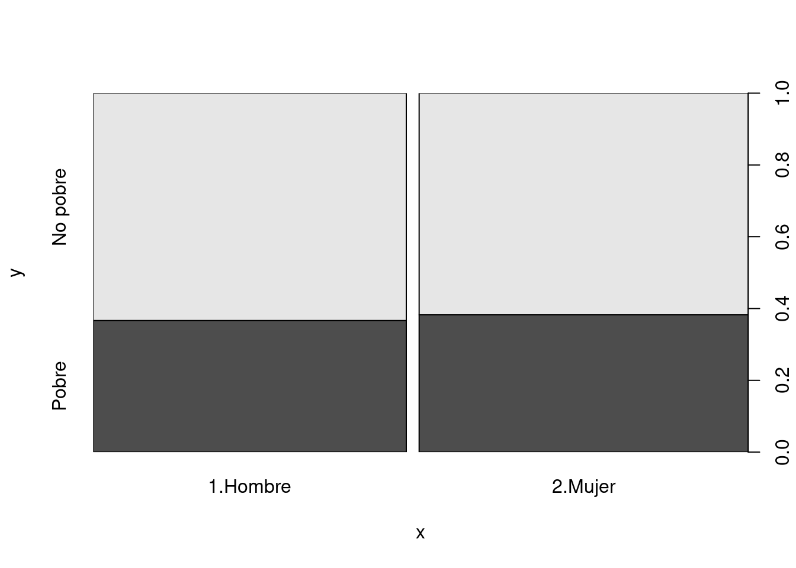
plot(eh19p$area,eh19p$p0)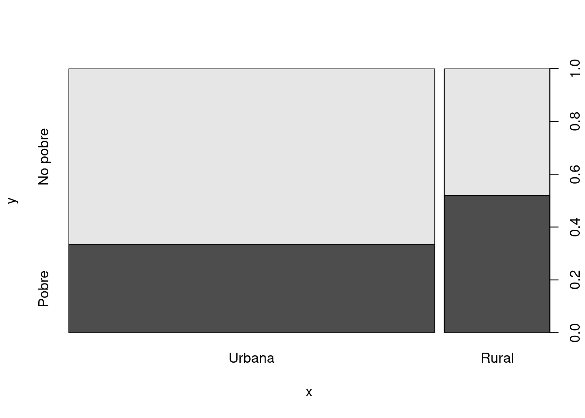
plot(eh19p$niv_ed,eh19p$p0)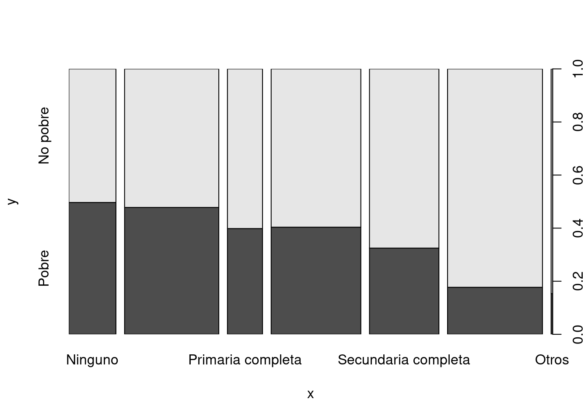
chisq.test(table(eh19p$niv_ed,eh19p$p0))##
## Pearson's Chi-squared test
##
## data: table(eh19p$niv_ed, eh19p$p0)
## X-squared = 2096.3, df = 6, p-value < 2.2e-162.3.1 Cuanti vs Cuanti
eh19p$s02a_03#edad## [1] 42 36 19 13 3 86 44 32 11 3 41 31 14 13 8 35 26
## [18] 23 45 43 22 20 19 4 41 42 22 20 18 62 65 37 18 33
## [35] 34 11 7 5 3 24 19 0 37 34 13 12 3 34 13 8 49
## [52] 20 12 31 22 19 20 3 25 73 68 35 8 42 22 20 32 4
## [69] 37 36 12 2 31 12 9 5 35 30 13 9 2 0 52 69 39
## [86] 15 12 26 27 47 41 26 21 19 2 28 20 4 1 59 54 22
## [103] 15 13 19 18 37 36 9 9 80 67 44 36 35 16 2 80 41
## [120] 22 18 16 5 49 47 20 37 38 13 9 35 33 12 9 5 3
## [137] 0 39 37 17 15 11 9 6 4 78 19 0 63 63 30 28 22
## [154] 20 54 52 23 14 67 74 16 39 40 16 8 43 40 22 16 11
## [171] 9 40 34 27 9 1 40 17 13 6 79 24 24 6 34 33 16
## [188] 14 48 45 17 5 37 14 10 8 28 4 42 44 21 19 14 5
## [205] 42 46 19 17 15 6 45 16 14 5 23 3 39 35 15 13 10
## [222] 6 34 35 12 10 7 32 33 8 0 45 43 12 21 18 51 47
## [239] 18 14 12 11 7 5 3 21 3 45 43 18 15 10 5 21 19
## [256] 18 90 28 30 10 6 4 24 24 3 26 26 4 2 20 32 30
## [273] 10 8 1 47 46 15 11 9 6 26 7 64 29 9 1 46 49
## [290] 24 22 15 5 30 26 7 44 45 20 16 7 20 27 4 57 42
## [307] 22 17 38 16 11 42 19 14 25 24 1 19 55 53 31 5 59
## [324] 59 33 30 28 16 21 45 45 27 24 21 19 57 48 22 11 39
## [341] 7 6 41 13 7 42 50 18 4 22 20 23 43 20 17 12 31
## [358] 12 10 4 31 30 4 1 44 23 19 46 45 12 40 29 6 4
## [375] 2 61 62 37 38 8 49 20 10 45 20 9 25 5 32 67 67
## [392] 31 33 34 12 4 69 69 47 19 16 0 58 27 40 21 17 14
## [409] 5 18 26 22 0 31 74 80 34 33 4 34 12 29 28 1 33
## [426] 14 7 37 39 14 9 6 4 36 28 3 1 59 57 25 22 20
## [443] 79 70 37 12 11 8 4 3 3 22 20 16 14 25 9 3 1
## [460] 31 11 8 3 30 25 33 34 15 12 3 48 19 13 11 8 25
## [477] 6 46 26 24 20 15 8 32 33 15 10 8 4 2 24 64 52
## [494] 26 19 16 45 36 17 15 12 10 7 43 48 18 15 24 6 78
## [511] 58 50 16 14 11 8 25 15 34 32 12 8 6 37 43 4 49
## [528] 51 26 22 38 76 56 47 47 19 17 15 9 7 4 45 42 25
## [545] 22 10 42 22 19 17 9 52 38 17 14 67 62 60 21 18 21
## [562] 19 2 53 54 22 20 18 16 12 3 0 39 43 35 29 11 5
## [579] 57 56 27 24 22 21 57 53 27 52 21 25 23 5 35 35 10
## [596] 3 46 26 21 16 3 33 37 11 3 45 20 18 30 30 9 6
## [613] 4 1 25 21 0 22 20 43 34 15 12 9 6 1 39 45 21
## [630] 20 13 12 52 54 19 16 12 31 30 8 68 27 5 40 19 17
## [647] 15 53 39 1 62 63 24 21 1 79 40 27 21 44 17 67 30
## [664] 36 0 16 39 21 13 40 35 17 7 28 30 6 69 62 34 12
## [681] 2 75 27 51 38 34 14 12 37 30 13 4 44 42 35 18 14
## [698] 6 37 16 15 13 4 36 37 11 3 48 51 25 23 21 17 45
## [715] 9 32 30 22 26 6 51 66 12 20 15 47 22 17 34 7 3
## [732] 77 17 15 23 19 0 70 40 25 27 2 0 25 27 4 3 0
## [749] 51 50 21 18 47 44 8 29 7 2 75 30 33 3 49 23 18
## [766] 85 45 46 22 21 24 24 4 1 39 41 16 14 4 0 31 30
## [783] 7 21 37 34 16 36 15 13 6 25 4 45 45 21 19 11 30
## [800] 3 30 29 1 39 19 73 32 27 27 5 3 49 49 22 17 1
## [817] 24 29 4 47 48 26 24 21 21 46 17 10 49 48 23 22 7
## [834] 69 58 59 34 7 3 44 26 30 31 15 58 17 38 40 17 11
## [851] 9 2 20 18 65 62 37 2 59 56 19 16 13 9 4 54 51
## [868] 23 89 33 36 14 5 1 25 5 3 43 24 21 1 33 27 9
## [885] 6 58 54 35 32 11 29 25 35 25 9 5 24 26 3 29 27
## [902] 8 5 3 28 25 10 5 3 52 49 27 18 8 0 48 53 18
## [919] 16 6 51 25 23 20 73 57 24 22 53 12 48 47 18 38 37
## [936] 4 26 85 65 62 25 35 35 13 10 4 53 54 35 28 26 23
## [953] 51 17 30 29 1 35 30 10 6 42 38 13 10 61 37 14 11
## [970] 30 30 19 54 52 27 24 24 23 28 8 58 43 23 15 11 45
## [987] 45 24 20 15 44 14 11 9 5 30 41 22 42 24
## [ reached getOption("max.print") -- omitted 38605 entries ]eh19p$aestudio# años de educación## [1] 17 12 13 6 NA 0 16 15 4 NA 6 4 8 6 2 17 13
## [18] 15 8 6 12 13 9 0 5 4 14 13 11 3 2 11 10 8
## [35] 6 5 1 0 NA 12 12 NA 8 5 6 4 NA 0 6 1 3
## [52] 11 5 14 14 5 8 NA 15 1 0 2 2 3 15 14 5 0
## [69] 5 5 6 NA 5 4 3 0 3 5 6 4 NA NA 2 0 3
## [86] 9 6 17 17 12 12 17 12 13 NA 12 12 0 NA 5 5 13
## [103] 8 7 12 12 17 17 3 3 2 0 7 12 12 9 NA 0 17
## [120] 14 13 10 0 6 12 12 5 17 8 4 12 3 6 3 0 NA
## [137] NA 12 12 8 7 4 3 0 0 4 10 NA 0 4 10 11 11
## [154] 12 3 3 1 7 0 0 7 3 4 10 2 5 5 14 8 6
## [171] 2 15 5 10 2 NA 14 10 7 0 4 8 7 0 6 8 8
## [188] 7 12 5 10 0 5 6 4 2 5 0 5 8 11 12 6 0
## [205] 4 3 13 11 8 0 1 9 5 0 14 NA 3 4 7 5 3
## [222] 0 4 12 6 4 0 5 6 2 NA 5 0 5 7 7 5 0
## [239] 11 6 6 5 1 0 NA 8 NA 5 2 12 8 4 0 14 12
## [256] 8 0 2 1 2 0 0 12 15 NA 12 12 0 NA 12 12 12
## [273] 5 2 NA 3 0 0 4 2 0 9 1 5 11 2 NA 5 3
## [290] 15 14 8 0 17 15 0 4 5 14 9 1 9 16 0 3 3
## [307] 13 10 5 9 4 6 13 7 9 12 NA 12 10 8 17 0 11
## [324] 13 17 17 17 8 16 6 5 17 14 12 12 7 5 12 5 8
## [341] 0 0 12 7 1 12 17 12 0 12 14 16 13 14 11 6 0
## [358] 5 4 0 12 12 0 NA 4 13 12 17 17 6 5 9 0 0
## [375] NA 7 2 17 16 1 17 13 4 8 13 3 17 0 17 16 14
## [392] 15 11 10 5 0 12 5 0 10 9 NA 10 17 0 12 11 8
## [409] 0 12 12 15 NA 8 4 0 10 13 0 17 5 10 8 NA 12
## [426] 7 0 0 1 8 3 0 0 12 12 NA NA 5 5 17 17 13
## [443] 17 15 5 6 4 2 0 NA NA 13 13 8 7 8 3 NA NA
## [460] 3 3 1 NA 16 17 10 3 7 6 NA 1 12 7 5 1 9
## [477] 0 2 13 16 12 8 2 5 0 8 4 2 0 NA 12 4 0
## [494] 12 11 10 4 5 11 9 5 4 0 12 12 12 8 15 0 3
## [511] 12 9 9 7 5 1 8 9 4 6 7 2 0 17 17 0 12
## [528] 8 15 12 17 17 12 6 4 13 11 9 3 2 0 17 12 16
## [545] 16 4 8 13 12 10 2 12 4 10 7 2 8 0 14 11 12
## [562] 12 NA 3 0 12 13 12 7 5 NA NA 5 5 17 12 5 0
## [579] 5 6 17 14 14 12 4 5 17 10 14 13 13 0 17 17 4
## [596] NA 3 14 12 9 NA 3 3 6 NA 12 14 13 7 8 2 0
## [613] 0 NA 14 13 NA 11 12 3 8 9 6 2 0 NA 5 10 13
## [630] 13 7 6 5 0 12 10 5 17 17 1 12 17 0 12 12 11
## [647] 10 17 17 NA 5 5 15 14 NA 0 17 17 15 11 11 4 17
## [664] 15 NA 8 5 13 7 12 12 11 1 13 12 0 17 17 12 6
## [681] NA 3 17 2 5 12 7 6 9 12 6 0 8 12 5 11 6
## [698] 0 12 7 7 7 0 12 5 5 NA 0 3 15 15 13 11 10
## [715] 3 12 17 14 17 0 5 5 6 12 7 17 16 11 17 1 NA
## [732] 0 10 9 16 12 NA 5 12 12 17 NA NA 11 12 0 NA NA
## [749] 10 4 15 11 17 13 2 17 1 NA 3 17 17 NA 17 16 12
## [766] 2 14 17 14 12 12 14 0 NA 16 17 9 7 0 NA 16 15
## [783] 1 15 15 13 10 14 8 7 0 6 0 17 17 14 12 4 12
## [800] NA 17 17 NA 1 12 5 16 13 14 0 NA 11 8 13 9 NA
## [817] 12 12 0 5 5 12 16 14 15 2 9 5 6 2 12 15 1
## [834] 12 9 4 17 1 NA 17 17 12 12 8 5 10 3 5 11 5
## [851] 3 NA 13 12 5 3 9 NA 11 3 11 10 8 2 0 7 12
## [868] 13 0 10 3 8 0 NA 13 0 NA 0 12 11 NA 12 8 2
## [885] 0 12 12 12 12 5 12 12 17 12 2 0 15 15 NA 12 12
## [902] 1 0 NA 7 15 4 0 NA 10 5 17 12 2 NA 17 7 0
## [919] 9 0 5 17 14 12 3 3 17 15 0 6 5 5 9 12 17
## [936] 0 17 0 8 5 13 12 12 7 3 0 6 7 17 16 16 14
## [953] 12 10 17 17 NA 12 15 5 0 17 17 6 4 13 17 7 4
## [970] 12 12 12 2 5 12 14 15 12 12 1 5 5 15 8 4 0
## [987] 5 12 13 8 5 8 6 2 0 17 12 16 12 16
## [ reached getOption("max.print") -- omitted 38605 entries ]eh19p$ylab# ingreso laboral## [1] 3000.0000 NA NA NA
## [5] NA NA 3590.0000 NA
## [9] NA NA 2511.3999 1000.0000
## [13] NA NA NA 2986.8333
## [17] NA NA 3500.0000 1515.5000
## [21] NA NA NA NA
## [25] 4330.0000 1299.0000 NA NA
## [29] NA 605.0000 650.0000 1200.0000
## [33] NA 2000.0000 NA NA
## [37] NA NA NA 2814.5000
## [41] NA NA NA 3637.2000
## [45] NA NA NA 2110.8750
## [49] NA NA 2598.0000 NA
## [53] NA 3160.0000 NA 2121.7000
## [57] NA NA 649.5000 5845.5000
## [61] NA NA NA 4373.2998
## [65] 2165.0000 NA 1890.0000 NA
## [69] 1299.0000 1299.0000 NA NA
## [73] 325.0000 1299.0000 NA NA
## [77] 2857.8000 NA NA NA
## [81] NA NA 1515.5000 1268.6899
## [85] NA NA NA 1299.0000
## [89] 500.0000 4763.0000 NA NA
## [93] NA NA NA 8652.6992
## [97] NA NA NA 5000.0000
## [101] NA 433.0000 346.4000 NA
## [105] 3000.0000 NA 5000.0000 4416.6665
## [109] NA NA NA NA
## [113] 3117.5999 1120.0000 389.7000 NA
## [117] NA NA 2000.0000 NA
## [121] NA NA NA 2111.7600
## [125] 5233.1665 NA 1200.0000 4104.1665
## [129] NA NA 4330.0000 1395.0934
## [133] NA NA NA NA
## [137] NA 2980.0000 720.0000 NA
## [141] NA NA NA NA
## [145] NA 800.0000 1750.0000 NA
## [149] NA NA 2000.0000 2566.6667
## [153] 1500.0000 NA 2233.3335 166.6667
## [157] 1389.7000 NA NA NA
## [161] 303.1000 533.3334 NA NA
## [165] NA 2598.0000 1299.0000 NA
## [169] NA NA NA 5833.3335
## [173] 4330.0000 NA NA NA
## [177] NA NA NA NA
## [181] NA 4800.0000 1304.0000 NA
## [185] 1180.0000 NA NA NA
## [189] 4519.6001 259.8000 NA NA
## [193] 2515.0000 NA NA NA
## [197] 430.0000 NA NA 955.0000
## [201] 1675.0000 NA NA NA
## [205] 2598.0000 952.6000 NA NA
## [209] NA NA 953.0000 1299.0000
## [213] 886.6667 NA 1760.8334 NA
## [217] 3600.0000 1330.0000 NA NA
## [221] NA NA 2909.3000 1121.2400
## [225] NA NA NA 3000.0000
## [229] 2165.0000 NA NA 3625.0000
## [233] NA NA 2598.0000 NA
## [237] 3117.5999 NA NA NA
## [241] NA NA NA NA
## [245] NA NA NA 3149.1667
## [249] NA NA NA NA
## [253] NA NA NA NA
## [257] NA NA 3897.0000 NA
## [261] NA NA 5000.0000 NA
## [265] NA 4500.0000 3031.0000 NA
## [269] NA NA 3500.0000 NA
## [273] NA NA NA 2800.0000
## [277] NA NA NA NA
## [281] NA NA NA 2680.0000
## [285] 1732.0000 NA NA 3247.5000
## [289] 1082.5000 NA NA NA
## [293] NA 381.0000 2270.0000 NA
## [297] 1840.0000 NA NA NA
## [301] NA 2000.0000 2200.0000 NA
## [305] NA 5022.7998 NA NA
## [309] 1890.0000 NA NA 836.0000
## [313] 480.0000 NA 1000.0000 340.0000
## [317] NA 2078.3999 700.0000 NA
## [321] 5530.2500 NA 3897.0000 NA
## [325] 2550.0000 1550.0000 2991.0000 NA
## [329] NA 1764.9500 2395.0000 5800.0000
## [333] 1400.0000 NA 2684.5999 NA
## [337] 3009.7998 NA NA 2300.0000
## [341] NA NA 3112.5000 NA
## [345] NA 2000.0000 4950.0000 NA
## [349] NA NA NA NA
## [353] 909.3000 909.3000 NA NA
## [357] 655.8800 NA NA NA
## [361] 3266.6667 519.6000 NA NA
## [365] 2165.0000 NA NA 2524.2500
## [369] 4794.3335 NA 1933.0000 300.0000
## [373] NA NA NA 1320.0000
## [377] 1732.0000 2044.0000 3754.1665 NA
## [381] 5256.0000 NA NA NA
## [385] NA NA 1800.0000 NA
## [389] 7789.6699 2250.0000 NA 1500.0000
## [393] 2886.6001 3280.0000 NA NA
## [397] NA NA 2488.1667 NA
## [401] NA NA 1065.1799 1425.0000
## [405] 1559.8000 530.4250 NA NA
## [409] NA NA 2430.3999 2430.3999
## [413] NA NA 1670.0000 NA
## [417] 779.4000 2514.0332 NA 3033.3333
## [421] NA 3117.5999 866.0000 NA
## [425] 2121.7000 NA NA 1082.5000
## [429] 2000.0000 NA NA NA
## [433] NA 2500.0000 NA NA
## [437] NA 500.0000 NA 4666.6665
## [441] NA NA NA NA
## [445] NA NA 606.2000 NA
## [449] NA NA NA 1000.0000
## [453] NA NA NA 700.0000
## [457] NA NA NA 2078.3999
## [461] NA NA NA 1750.0000
## [465] 1150.0000 3097.5469 650.0000 NA
## [469] NA NA 2400.0000 1700.0000
## [473] NA NA NA NA
## [477] NA 2598.0000 2165.0000 1948.5000
## [481] NA NA NA 3117.5999
## [485] 1082.5000 476.3000 NA NA
## [489] NA NA 1200.0000 NA
## [493] 6062.0000 4394.9497 NA NA
## [497] 866.0000 2500.0000 NA NA
## [501] NA NA NA 3031.0000
## [505] 2000.0000 NA NA 1000.0000
## [509] NA NA 3031.0000 866.0000
## [513] 1874.8900 NA NA NA
## [517] 2009.8000 1659.8000 2850.0000 3000.0000
## [521] NA NA NA NA
## [525] 2430.0000 NA 2500.0000 324.7500
## [529] NA NA 3291.6667 NA
## [533] 2600.0000 3600.0000 2333.8699 620.0000
## [537] NA NA NA NA
## [541] NA 2500.0000 NA NA
## [545] NA NA 700.0000 NA
## [549] NA NA NA 2500.0000
## [553] NA NA NA 750.0000
## [557] 2000.0000 1300.0000 NA NA
## [561] 2333.1667 NA NA 909.3000
## [565] 3031.0000 NA 500.0000 3247.5000
## [569] NA NA NA NA
## [573] 3377.3999 NA 4333.3335 NA
## [577] NA NA 5283.3330 2300.0000
## [581] 5390.8501 NA 800.0000 NA
## [585] 2165.0000 NA 3000.0000 1083.3334
## [589] NA 1400.0000 1300.0000 NA
## [593] 1000.0000 8000.0000 NA NA
## [597] 3031.0000 2234.8000 1000.0000 NA
## [601] NA NA 3000.0000 NA
## [605] NA 16866.6660 NA NA
## [609] 1700.0000 NA NA NA
## [613] NA NA 3000.0000 NA
## [617] NA 2360.0000 NA 3100.0000
## [621] NA NA NA NA
## [625] NA NA 2625.0000 5412.5000
## [629] NA NA NA NA
## [633] 3117.5999 NA 2598.0000 NA
## [637] NA 2516.6667 2208.3333 NA
## [641] 4000.0000 3000.0000 NA 2000.0000
## [645] NA NA NA 6083.3330
## [649] 5333.3335 NA 2645.8335 210.0000
## [653] 1200.0000 NA NA NA
## [657] 1818.6000 2723.3333 NA 2760.0000
## [661] NA NA NA 2814.5000
## [665] NA NA 1700.0000 NA
## [669] NA 3663.3335 NA NA
## [673] NA 1700.0000 NA NA
## [677] 7950.0000 NA 1500.0000 NA
## [681] NA NA 4310.0000 NA
## [685] 2700.0000 NA NA NA
## [689] 3491.6667 3291.6667 NA NA
## [693] 2800.0000 2165.0000 1389.7000 NA
## [697] NA NA NA NA
## [701] NA NA NA 5958.3335
## [705] 1500.0000 NA NA 1732.0000
## [709] NA NA NA NA
## [713] NA 2987.7000 NA 880.0000
## [717] NA NA 5250.0000 NA
## [721] 2121.7000 NA NA NA
## [725] NA 8064.0830 500.0000 429.9000
## [729] NA NA NA NA
## [733] NA NA 1082.5000 NA
## [737] NA NA NA 4363.1333
## [741] NA NA NA 2078.3999
## [745] NA NA NA NA
## [749] 3000.0000 900.0000 NA NA
## [753] 4807.5000 NA NA 850.0000
## [757] NA NA 1505.0000 3300.0000
## [761] 3500.0000 NA 5000.0000 NA
## [765] NA NA 5016.6665 5264.0830
## [769] NA NA 8227.0000 4908.3335
## [773] NA NA 2500.0000 NA
## [777] NA NA NA NA
## [781] 2491.6667 NA NA 300.0000
## [785] 1530.0000 NA NA 3090.0000
## [789] NA NA NA 3996.5898
## [793] NA 4272.4165 4272.4165 250.0000
## [797] NA NA 1240.0000 NA
## [801] NA 630.0000 NA 1727.6699
## [805] NA 9137.0000 NA NA
## [809] 3900.0000 NA NA 2714.8333
## [813] NA 1299.0000 NA NA
## [817] 11250.0000 NA NA 2000.0000
## [821] 619.1900 1821.6666 NA NA
## [825] NA 2000.0000 NA NA
## [829] 3440.0000 NA 2560.0000 NA
## [833] NA 238.1500 1407.2500 1285.0000
## [837] NA NA NA 4083.3333
## [841] 4062.5000 1130.0000 NA NA
## [845] 7620.7998 NA 1470.0000 5275.0000
## [849] 1082.5000 NA NA NA
## [853] NA 476.3000 3800.0000 NA
## [857] NA NA 433.0000 NA
## [861] NA NA NA NA
## [865] NA 3500.0000 3166.6665 NA
## [869] NA 2880.0000 NA 485.0000
## [873] NA NA NA NA
## [877] NA 2675.0000 2598.0000 777.9400
## [881] NA 4330.0000 1800.0000 NA
## [885] NA 1082.5000 5393.3330 NA
## [889] NA NA 3500.0000 1800.0000
## [893] 5000.0000 NA NA NA
## [897] 2078.3999 736.1000 NA 5196.0000
## [901] 1212.4000 NA NA NA
## [905] 4763.0000 2078.3999 NA NA
## [909] NA 3600.0000 NA 3589.5000
## [913] NA NA NA 5145.8335
## [917] 2524.3899 NA NA NA
## [921] NA 2500.0000 NA NA
## [925] NA 433.0000 NA NA
## [929] NA NA 3377.3999 NA
## [933] NA 10216.5000 2240.0000 NA
## [937] NA 790.0000 NA NA
## [941] 2598.0000 2400.0000 5200.0000 NA
## [945] NA NA 5833.3335 NA
## [949] NA NA NA NA
## [953] 995.9000 NA 4500.0000 NA
## [957] NA 3900.0000 1016.5000 NA
## [961] NA 5420.8335 5154.1665 NA
## [965] NA NA 2300.0000 NA
## [969] NA NA NA NA
## [973] 2165.0000 1300.0000 2165.0000 1800.0000
## [977] 1000.0000 1000.0000 4000.0000 NA
## [981] 1385.6000 NA NA NA
## [985] NA NA 900.0000 866.6667
## [989] NA NA 500.0000 NA
## [993] NA NA NA NA
## [997] 5700.0000 NA NA NA
## [ reached getOption("max.print") -- omitted 38605 entries ]cor(eh19p[,c("s02a_03","aestudio","ylab")],use="complete.obs")## s02a_03 aestudio ylab
## s02a_03 1.00000000 -0.3287425 0.01768749
## aestudio -0.32874252 1.0000000 0.39732445
## ylab 0.01768749 0.3973245 1.00000000cor(eh19p[,c("s02a_03","aestudio","ylab")],use="pairwise.complete.obs")## s02a_03 aestudio ylab
## s02a_03 1.00000000 0.1884556 0.01811229
## aestudio 0.18845555 1.0000000 0.39732445
## ylab 0.01811229 0.3973245 1.00000000nrow(na.omit(eh19p[,c("s02a_03","aestudio","ylab")]))## [1] 15765nrow(na.omit(eh19p[,c("s02a_03","aestudio")]))## [1] 36702library(GGally)
ggpairs(eh19p,columns = c("s02a_03","aestudio","ylab"))## Warning in ggally_statistic(data = data, mapping = mapping,
## na.rm = na.rm, : Removed 2903 rows containing missing
## values## Warning in ggally_statistic(data = data, mapping = mapping,
## na.rm = na.rm, : Removed 23816 rows containing missing
## values## Warning: Removed 2903 rows containing missing values
## (geom_point).## Warning: Removed 2903 rows containing non-finite values
## (stat_density).## Warning in ggally_statistic(data = data, mapping = mapping,
## na.rm = na.rm, : Removed 23840 rows containing missing
## values## Warning: Removed 23816 rows containing missing values
## (geom_point).## Warning: Removed 23840 rows containing missing values
## (geom_point).## Warning: Removed 23816 rows containing non-finite values
## (stat_density).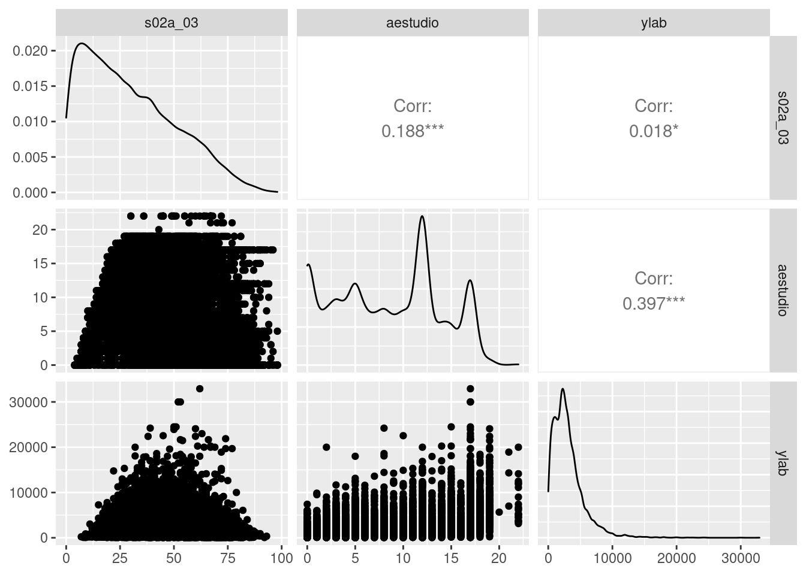
ggpairs(eh19p,columns = c("s02a_02","aestudio","ylab","p0"))## plot: [1,1] [=>---------------------------] 6% est: 0s
## plot: [1,2] [===>-------------------------] 12% est: 0s## Warning: Removed 2903 rows containing non-finite values
## (stat_boxplot).## plot: [1,3] [====>------------------------] 19% est: 1s## Warning: Removed 23816 rows containing non-finite values
## (stat_boxplot).##
plot: [1,4] [======>----------------------] 25% est: 1s
plot: [2,1] [========>--------------------] 31% est: 1s `stat_bin()` using `bins = 30`. Pick better value with
## `binwidth`.## Warning: Removed 2903 rows containing non-finite values
## (stat_bin).## plot: [2,2] [==========>------------------] 38% est: 1s## Warning: Removed 2903 rows containing non-finite values
## (stat_density).## plot: [2,3] [============>----------------] 44% est: 1s## Warning in ggally_statistic(data = data, mapping = mapping,
## na.rm = na.rm, : Removed 23840 rows containing missing
## values## plot: [2,4] [=============>---------------] 50% est: 1s## Warning: Removed 2903 rows containing non-finite values
## (stat_boxplot).##
plot: [3,1] [===============>-------------] 56% est: 1s `stat_bin()` using `bins = 30`. Pick better value with
## `binwidth`.## Warning: Removed 23816 rows containing non-finite values
## (stat_bin).## plot: [3,2] [=================>-----------] 62% est: 0s## Warning: Removed 23840 rows containing missing values
## (geom_point).## plot: [3,3] [===================>---------] 69% est: 0s## Warning: Removed 23816 rows containing non-finite values
## (stat_density).## plot: [3,4] [=====================>-------] 75% est: 0s## Warning: Removed 23816 rows containing non-finite values
## (stat_boxplot).##
plot: [4,1] [=======================>-----] 81% est: 0s
plot: [4,2] [========================>----] 88% est: 0s `stat_bin()` using `bins = 30`. Pick better value with
## `binwidth`.## Warning: Removed 2903 rows containing non-finite values
## (stat_bin).##
plot: [4,3] [==========================>--] 94% est: 0s `stat_bin()` using `bins = 30`. Pick better value with
## `binwidth`.## Warning: Removed 23816 rows containing non-finite values
## (stat_bin).## plot: [4,4] [=============================]100% est: 0s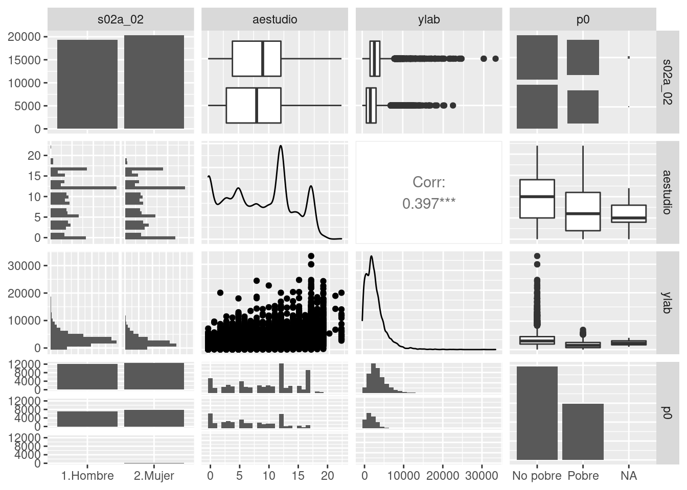
Allaire, JJ, Yihui Xie, Jonathan McPherson, Javier Luraschi, Kevin Ushey, Aron Atkins, Hadley Wickham, Joe Cheng, Winston Chang, and Richard Iannone. 2020. Rmarkdown: Dynamic Documents for r. https://CRAN.R-project.org/package=rmarkdown.
R Core Team. 2019. R: A Language and Environment for Statistical Computing. Vienna, Austria: R Foundation for Statistical Computing. https://www.R-project.org/.
Ted, Kwartler. 2017. Text mining in practice with R. https://doi.org/10.1080/00949655.2019.1630887.
Xie, Yihui. 2019. Knitr: A General-Purpose Package for Dynamic Report Generation in r. https://CRAN.R-project.org/package=knitr.
———. 2020. Bookdown: Authoring Books and Technical Documents with r Markdown. https://CRAN.R-project.org/package=bookdown.
Xie, Yihui, J. J. Allaire, and Garrett Grolemund. 2018. “How to Read This Book.” Transforming Climate Finance and Green Investment with Blockchains, 1. https://doi.org/10.1016/b978-0-12-814447-3.00041-0.